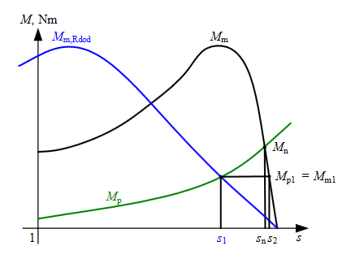
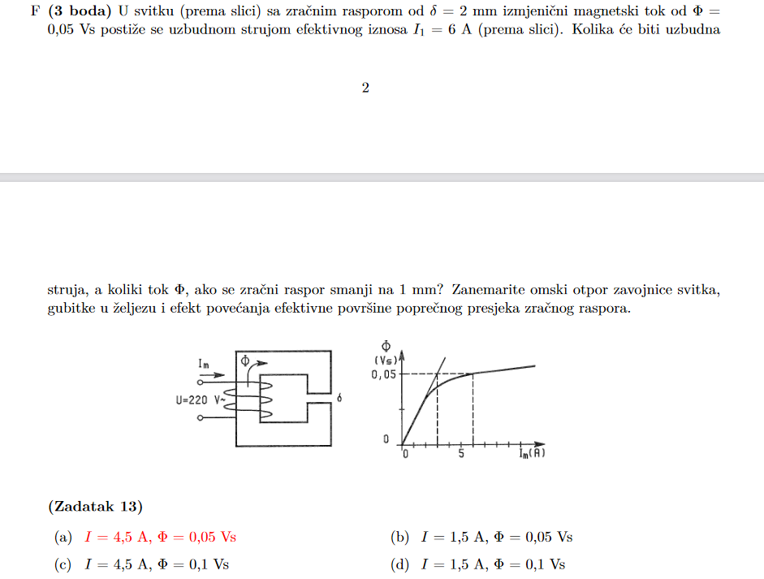

Danas sam imao konzultacije s profesorom u vezi nekih stvari koje mi nisu bile jasne pa da podijelim ako nekog iste stvari muče. Konkretno LJIR D) zadatak sam se stalno vrtio u krug jer sam mislio da je zadan otpor Rs a zapravo je zadan Rst samo sto su oni napravili tipfeler, tako da taj Rst treba podijelit s 2 i dobit Rs. Isto tako LJIR C) zadatak i ZIR E) zadatak me je mucilo jer se ne radi o konstantnom teretu odnosno momentu. Kad se ne radi o konstantnom momentu nije dovoljno koristiti slicnost stranice trokuta ( kod U/f kontrole )kao sto je bilo receno na zadnjoj 6. auditornoj vjezbi nego treba tu drugu tocku ( dobivenu smanjenim otporom ili U/f upravljanjem ) vratit na prvobitnu krivulju.

Tocka na plavoj krivulji je vracena na crnu i izracunat s2 koji je kasnije koristen sa s1 za izracun otpora. To je inace 31 zadatak iz pdf-a zadatci za vjezbu asinkroni sa FERWeba. Tako da se ne zaletite i na koristite odma formulu s prezentacije jer je tamo koristena uz konstantan teret. Isto vrijedi i za U/f upravljanje samo tamo se koristi za izracun frekvencije i napona. Dalje :

Ovaj zadatak je vec objasnjen cini mi se al nek bude i ovdje. Meni kad sam ga prvi put gledao nije bio jasan ovaj desni graf. Ono sto je caka ovdje je da je ova ravna crta odnosno pravac magnetiziranje zracnog raspora, a zakrivljena krivulja je magnetiziranje zeljeza. Također kod izmjenicne magnetizacije tok mora biti ocuvan odnosno isti ako je napon ostao isti. Struja se pokori naponu. Ako slijedimo tu logiku s smanjenjem delta na 1mm smanjio nam se i otpor zracnog raspora stoga da se tok očuva potrebna nam je manja struja. Struja potrebna da se magnetizira zeljezo je ostala ista. Na pocetku je zadano da je 6 ampera ukupna struja. Dakle 3 A nam je potrebno da raspor ‘naguramo’ na 0.05 toka a jos dodatna 3 A da i zeljezo dode do 0.05. Dakle smanjen raspor za pola - > smanjena struja raspora na pola - > 1.5 A plus 3 A za zelljezo i dodemo do 4.5 A.
Vjv je ovo nekome vec sve jasno ali mozda neko ovo vidi pa nece razbijat glavu ko ja. Isto tako ne znam kolko dobro naglasit ali CRTAJTE GRAFOVE OBAVEZNO KOD ASINKRONIH STROJEVA, sve ce vam biti milijun puta jasnije.